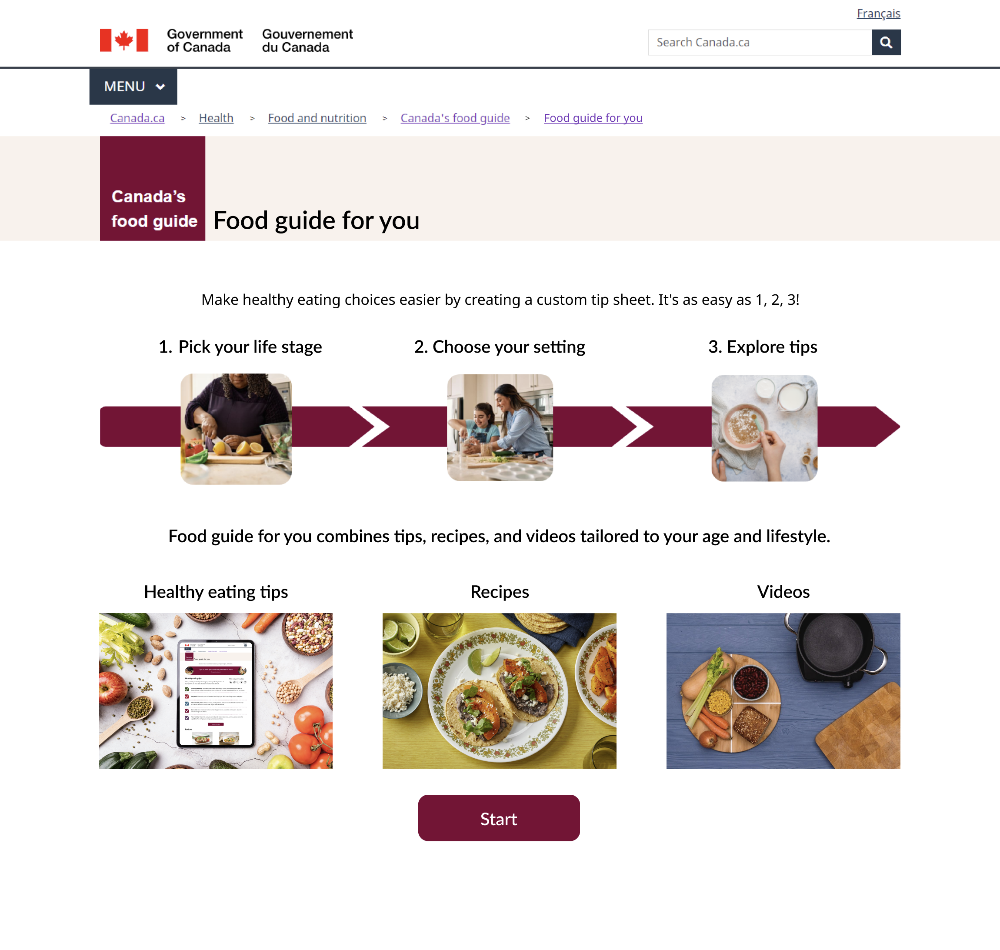
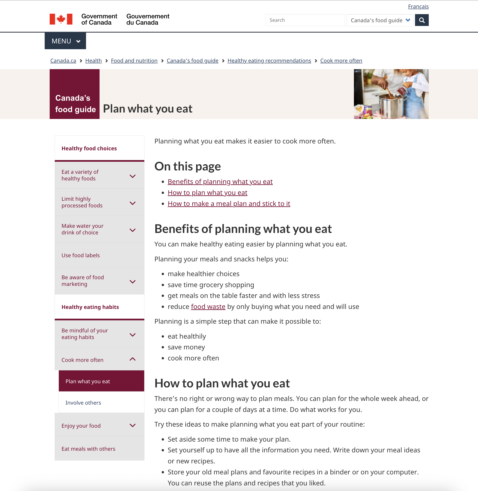

Landing page
This page provides an overview of how to use the tool and what the user can expect to find on the tip sheet that they create.

Note: The prototypes on this page are for the purpose of my portfolio only. They are an abridged version of the official food guide resource.
After conducting some user research about people’s opinions on Canada’s Food Guide, the team found that many people desired actionable advice from the food guide that was less general.
Different groups of people had different ways that they hoped Canada’s Food Guide could be more specific to their lifestyle. For example:
Although Canada’s Food Guide provides helpful advice about dietary guidance, this information can be more general and is often in the form of a web page with multiple paragraphs. While some people may take the time to read these pages, many people want something that is more concise, quicker to read through, and easier to understand.

Since people wanted information that was concise and specific to their needs and lifestyle, the team decided to create a web tool where users could make their own tip sheets about healthy eating that were tailored to their lifestyle. Besides tips, these tip sheets would also include recipes, videos, and helpful links to Canada’s Food Guide pages that were related to the user’s selected activity. The tips, recipes, and videos could then be further customized to meet the user’s food preferences.
As the prototype designer of the team, my responsibility was to design a Figma prototype for the team’s idea. I collaborated with nutritionists and web writers who created the written content on the tip sheets. The following shows different pages from my prototype before the team conducted usability testing.
This page provides an overview of how to use the tool and what the user can expect to find on the tip sheet that they create.

Our team collaborated with a team of UX researchers to test my prototype with adults, teens, and kids. I helped come up with scenarios and tasks to use for testing that were relevant to the life stage of the research participant.
Scenario and task example:
Usability testing was conducted through Zoom sessions that were one-on-one and moderated.
Based on the insights and user feedback from usability testing, I made changes to the prototype to improve the design of the web tool. The following design changes help create a better user experience and solve usability issues discovered during testing.
Children reacted well to the tip sheet as they liked the illustrations and colours. However, since the process of creating the tip sheet had the same layout as the adults (the only difference being the use of the Kids brand’s green instead of burgundy), that part of the process was not engaging for them.
I designed a new interface that expanded the use of illustrations and colours beyond the tip sheet and included interactive illustrations when hovering and clicking on buttons.
After making these improvements in my prototype, I passed my prototype and accompanying notes to the team’s web developer, who will publish Food Guide For You once web development is complete.